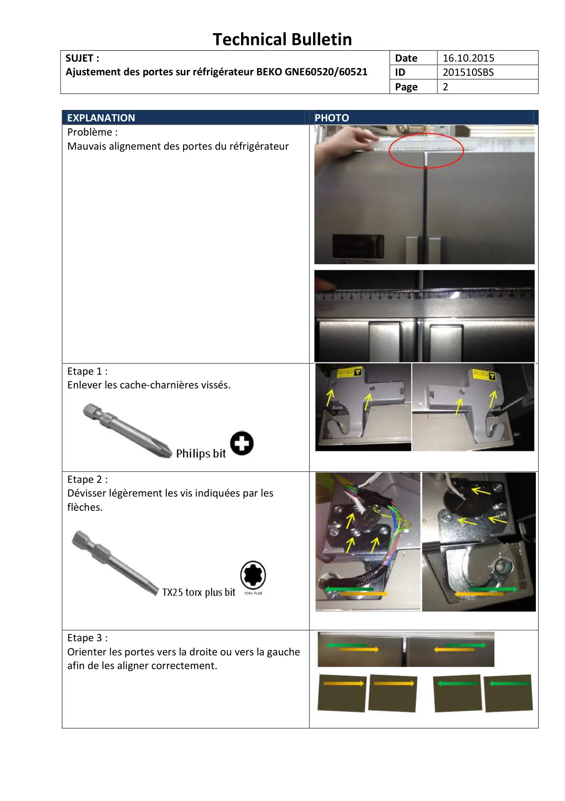
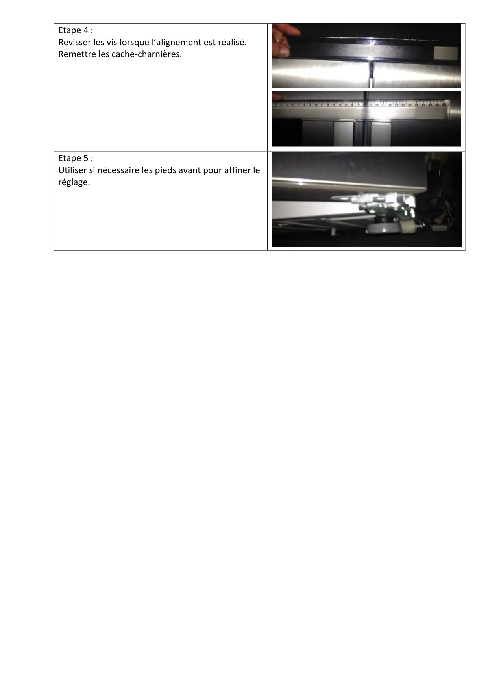

Réglage portes sur GNE60520 60521 (2)

Technical BulletinSUJET :Ajustement des portes sur réfrigérateur BEKO GNE60520/60521Date16.10.2015ID201510SBSPage2EXPLANATIONPHOTOProblème :Mauvais alignement des portes du réfrigérateurEtape 1 :Enlever les cache-charnières vissés.Etape 2 :Dévisser légèrement les vis indiquées par lesflèches.Etape 3 :Orienter les portes vers la droite ou vers la gaucheafin de les aligner correctement.
1 / 2
Etape 4 :Revisser les vis lorsque l’alignement est réalisé.Remettre les cache-charnières.Etape 5 :Utiliser si nécessaire les pieds avant pour affiner leréglage.
2 / 2